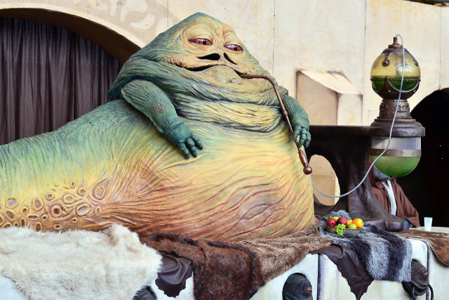

L'espèce Hutt
Description
Les Hutts ressemblent à des grosses limaces. Ils sont présents dans les épisodes I, IV et VI. Le plus célèbre des Hutts est Jabba le Hutt. Quelques caractéristiques des Hutts :
- Ils sont immunisés aux pouvoirs de la Force.
- Ils sont capables de porter plusieurs tonnes.
- Ils parlent le huttese, langage des organisations du crime.
- Ils sont capables de résister à une décharge explosive.
- Ils peuvent prétendre à une durée de vie de 1 000 années standard.
La plupart des individus de cette race sont des gangsters.
Origine
Les Hutts sont originaires de la planète Varl, qui comme Tatooine, possédait un système solaire composé de deux soleils jumeaux, Evona et Ardos, vénérés comme des dieux. Contrairement à Tatooine, on suppose que la planète Varl était couverte de forêt. D'après les légendes hutts, Evona a été absorbé par un trou noir et Ardos s'est effondré sur lui-même. Depuis que les Hutts ont survécu à la mort de leurs dieux, ils sont devenus des dieux, du moins ils le croient, mais on peut dire plus sûrement qu'ils sont devenus très égocentriques. Les scientifiques ont démonté cette théorie et racontent que les Hutts ont détruit leur monde dans une guerre civile.
Après la dévastation de Varl, les Hutts ont migré vers une planète appelée Evocar et déplacé la pacifique espèce d'origine par d'astucieuses pratiques commerciales. Les Hutts ont renommé la planète Nal Hutta, glorieux Joyau, en Hutt. Nal Hutta est la capitale de l'empire de l'espace Hutt.
Avant l'établissement de l'Ancienne république, les Hutts étaient l'espèce dominante de la galaxie. Bien qu'ils n'aient jamais construit d'empire étendu, leur domination s'est fondée sur des bases économiques du commerce. Kossac est le plus célèbre conquérant de tous les temps et a défait le despote Xim dans la troisième bataille de Vondor, selon le Guide 12 de la galaxie - Aliens : Trilogie Ennemies et alliés et Han Solo.
Physiologie
Les Hutts sont issus d'une évolution mixte. Généralement, ils sont considérés comme gastéropodes à cause de leur moyen de locomotion. Ils bougent grâce à leur queue. Ils disposent de deux bras rabougris et une large bouche. Comme leur peau est extrêmement épaisse, combiné à des organes redondants et une chair résistante, ils peuvent résister à une décharge à feu explosive. Bien que les Hutts soient hermaphrodites, certains d'entre eux se considèrent comme mâles ou femelles. Même s'ils se reproduisent par clonage (donc un Hutt possède un seul parent biologique), ils peuvent considérer deux Hutts comme parents. Jabba le Hutt disait qu'il possédait une mère et un père.